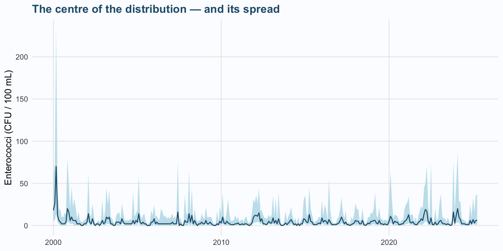

A reproducible R exploration of swimming-site samples, monthly variation, and the importance of missing data.
R
Environment
TidyTuesday
Author
Aphiaut Imuan
Published
May 20, 2025
Water-quality data looks simple at first. There is a place, a date, and a measurement. But once I started exploring this dataset, I realised that the numbers were not quite as straightforward as they seemed.
A high average, for example, does not necessarily mean that every sample from a site was high. It could be the result of just one unusually large measurement. Missing values also need some care: a measurement that was never recorded is very different from a recorded value of zero.
In this post, I use R to explore where samples were collected around Sydney, take a closer look at site measurements during April 2024, and then step back to see how the distribution has changed over time.
For this exploration, I focus on enterococci, measured in colony-forming units per 100 mL (CFU / 100 mL).
Before doing any comparisons, I removed records without a valid date or enterococci measurement, as well as negative measurements. I kept genuine zero measurements, because zero is still an observed value.
Show R code
library(tidyverse)library(lubridate)library(sf)water_quality <-read_csv("data/water_quality.csv", show_col_types =FALSE) |>mutate(date =as.Date(date))theme_set(theme_minimal(base_size =12) +theme(panel.grid.minor =element_blank(),plot.title =element_text(face ="bold", colour ="#285d7b"),plot.background =element_rect(fill ="#fbfdff", colour =NA)))valid <- water_quality |>filter(!is.na(date), !is.na(enterococci_cfu_100ml), enterococci_cfu_100ml >=0)coverage <-tibble(Measure =c("Rows in source", "Rows with a valid date and non-negative measurement","Distinct council / site pairs", "First sample", "Last sample"),Value =c(nrow(water_quality), nrow(valid),nrow(distinct(valid, council, swim_site)),as.character(min(valid$date)), as.character(max(valid$date))))#knitr::kable(coverage, caption = "Coverage of the downloaded snapshot")
There are 123,530 rows in the original dataset. After removing records without a usable date or measurement, 123,223 observations remain. These represent 79 council–site combinations, with samples stretching from September 1991 to April 2025.
One detail is especially important for the rest of the analysis: I leave missing measurements as missing. I do not turn them into zero. A zero means that a measurement was actually recorded as zero; a missing value means that there is no measurement to summarise.
This is historical monitoring data, so the results here describe the downloaded dataset rather than current swimming conditions.
Where were samples collected?
Before looking at the measurements themselves, I wanted to see where the observations actually came from.
Figure 1: Sampling coordinates in the source data. This is a location plot, without a coastline basemap.
The sampling locations are clearly concentrated around Sydney’s coast and harbour. There are also a handful of sites further inland, but the eastern side of the map contains most of the observations.
This is useful context for everything that follows. The dataset represents a network of monitored locations rather than every possible swimming site across Sydney. Areas without points on the map should therefore be read as places that are not represented here, not places where the water necessarily had lower measurements.
Figure 1. Locations represented in the water-quality data. Most monitoring sites are concentrated around Sydney’s coastline and harbour.
Which sites stood out in April 2024?
With more than three decades of data, comparing every site across the full time period would quickly become difficult to interpret. Instead, I picked April 2024 as a snapshot and calculated the average enterococci measurement for each site during that month.
Show R code
april <- valid |>filter(date >=as.Date("2024-04-01"), date <as.Date("2024-05-01")) |>group_by(council, swim_site) |>summarise(samples =n(), mean_cfu =mean(enterococci_cfu_100ml),median_cfu =median(enterococci_cfu_100ml),max_cfu =max(enterococci_cfu_100ml), .groups ="drop") |>arrange(desc(mean_cfu))stopifnot(nrow(april) >0)top_sites <- april |>slice_head(n =15) |>mutate(site_label =paste(swim_site, council, sep =" · "))
Figure 2: The 15 highest site means in April 2024. Labels show the number of valid samples contributing to each mean.
A few sites immediately stand out.
Bilarong Reserve has the highest mean in this snapshot, at about 406 CFU / 100 mL. Queenscliff Beach follows at roughly 235, while Tamarama Beach and Darling Harbour also have noticeably higher means than most of the other sites shown.
But the small labels beside the bars are just as important as the bars themselves.
Most of these averages are based on only five or six samples. That makes the chart useful for understanding what happened during April 2024, but it would be misleading to treat it as a permanent ranking of the sites.
It is better thought of as a snapshot: these are the sites with the highest recorded averages during this particular month.
Figure 2. Sites with the highest mean enterococci measurements in April 2024. Each label shows how many valid samples contributed to the monthly average.
What is hiding behind the average?
The April chart raised another question for me.
Bilarong Reserve had a mean of 406. Does that mean its individual measurements were consistently around 400?
Not quite.
Looking at the mean alongside the median and maximum gives a much better picture of what happened within the month.
Show R code
april |>slice_head(n =10) |>select(Council = council, Site = swim_site, Samples = samples,Mean = mean_cfu, Median = median_cfu, Maximum = max_cfu) |> knitr::kable(digits =1, caption ="Sample counts and distribution summaries for the ten highest means")
Sample counts and distribution summaries for the ten highest means
Council
Site
Samples
Mean
Median
Maximum
Northern Beaches Council
Bilarong Reserve
5
406.0
200.0
1100
Northern Beaches Council
Queenscliff Beach
5
234.8
30.0
700
Waverley Council
Tamarama Beach
6
174.8
23.5
960
The City of Sydney
Darling Harbour
6
166.0
70.0
490
Waverley Council
Bronte Beach
6
126.3
11.5
420
Sutherland Shire Council
Boat Harbour
6
79.7
60.0
170
Randwick City Council
Little Bay Beach
6
69.0
31.0
280
Northern Beaches Council
Clontarf Pool
6
68.2
22.0
210
Randwick City Council
Coogee Beach
6
65.8
24.0
220
City of Canada Bay Council
Cabarita Beach
6
63.8
13.0
320
For Bilarong Reserve, the mean is 406, but the median is 200 and the maximum reaches 1,100 CFU / 100 mL.
The difference is even more striking at Queenscliff Beach. Its mean is about 235, but its median is only 30, while the highest measurement is 700.
Tamarama Beach tells a similar story: a mean of roughly 175, a median of 23.5, and a maximum of 960.
These are very different descriptions of the same data.
The mean is being pulled upward by relatively large observations, while the median tells us that a typical sample during the month was much lower. That does not make the mean incorrect; it simply shows why I would not want to interpret it on its own.
For these sites, the sample count, mean, median, and maximum together tell a much more useful story than a single average.
Missing does not mean zero
There was another issue I had to think about while working with this dataset.
Each swimming site belongs to a particular council. This means that many theoretical council–site combinations simply do not exist.
If I created a complete council-by-site grid and filled all of those empty combinations with zero, the resulting chart would look complete, but it would quietly introduce information that was never observed.
A blank combination does not mean:
enterococci = 0
It means:
there is no observation for that combination.
That distinction is why I keep missing combinations as missing and compare the observed sites directly instead.
It is a small data-cleaning decision, but it changes the meaning of the result.
How have measurements varied over time?
After looking closely at one month, I wanted to zoom back out.
Instead of following individual sites, I summarised the recorded measurements within each month from 2000 onward. The dark line shows the monthly median, while the shaded area represents the interquartile range, or the middle 50% of observations.
Show R code
monthly <- valid |>filter(year(date) >=2000) |>mutate(month =floor_date(date, "month")) |>group_by(month) |>summarise(median_cfu =median(enterococci_cfu_100ml),q25 =quantile(enterococci_cfu_100ml, 0.25),q75 =quantile(enterococci_cfu_100ml, 0.75),samples =n(), .groups ="drop")ggplot(monthly, aes(month, median_cfu)) +geom_ribbon(aes(ymin = q25, ymax = q75), fill ="#c5e3ed") +geom_line(colour ="#285d7b", linewidth =0.6) +labs(title ="The centre of the distribution — and its spread",x =NULL, y ="Enterococci (CFU / 100 mL)")

Figure 3: Median and interquartile range of recorded measurements within each month since 2000; changing site coverage can affect this pooled summary.
Most of the time, the median stays relatively low. The spread around it, however, is much less consistent.
Some months have a narrow band, meaning that the middle half of the observations were fairly similar. In other months, the band becomes much wider, showing that measurements varied considerably across the samples recorded during that period.
There is a particularly large spread near the beginning of the series, followed by smaller but still noticeable spikes throughout later years.
I would be careful about reading this as a simple story of water quality getting better or worse over time. The monitoring network itself may have changed: different sites may have entered or left the dataset, and sampling frequency may not have remained constant.
What the chart does show clearly is that the typical measurement and the variability around it are two different things. The median can remain fairly stable even during months when some observations are much higher than others.
Figure 3. Monthly median enterococci measurements since 2000. The shaded band shows the interquartile range and highlights periods when the recorded measurements were more variable.
What I took away from this analysis
I started with what seemed like a fairly simple dataset and an equally simple question: which sites had the highest measurements?
By the end, that was probably the least interesting question.
The April snapshot showed how easily an average can be influenced by a small number of high observations. Comparing the mean with the median and maximum made that much clearer. Looking at the data over time showed something similar: a relatively stable centre can exist alongside periods of much greater variation.
The missing values were another useful reminder. Filling an empty space with zero may make a table or heatmap easier to build, but it can also give that empty space a meaning it never had.
The biggest lesson for me was simple: before interpreting a summary statistic, I need to understand what observations went into it.
Sometimes the most useful part of an analysis is not finding the highest bar on the chart. It is figuring out why that bar is high in the first place.
Tools
This analysis was created in R with tidyverse, lubridate, sf packages, and lga 2022 map.